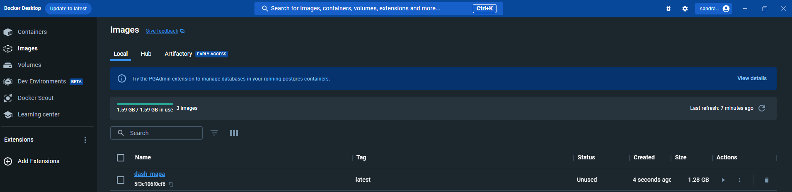

Dash App para Mapas#
Construcción de la aplicación#
La primera aplicación de ejemplo desplegada tiene como objetivo de visualización xxxxx. La estructura del código se puede dividir en 4 partes.
Importación de requerimientos y cargue de datos#
Con respecto al código original, se realizaron algunas modificaciones relacionadas con la importación de librerías y módulos adicionales. Se importó dash_bootstrap_components con el alias de dbc. Esta librería permite utilizar estilos de Bootstrap en la aplicación Dash para mejorar el diseño y la organización de la interfaz de usuario.
Asimismo, se cambió el tema de la aplicación utilizando la propiedad external_stylesheets al definir la instancia de dash.Dash. El tema “Flatly” de Dash Bootstrap Components se estableció como el tema de la aplicación. Esto cambia la apariencia general de la aplicación según ese tema de Bootstrap.
La lectura de datos y su procesamiento se mantuvieron sin cambios en comparación con el código original. Los datos se leen desde una URL, se realiza una agrupación por columnas específicas y se reinician los índices para su uso en la aplicación.
import pandas as pd
import plotly.express as px
import dash
from dash import dcc, html, Input, Output
import dash_bootstrap_components as dbc # Librería para estilos Bootstrap
import dash_table
# Cambiar el tema de la aplicación a "Flatly" de Dash Bootstrap Components
app = dash.Dash(__name__, external_stylesheets=[dbc.themes.FLATLY])
# Leer los datos
df = pd.read_csv("https://raw.githubusercontent.com/lihkir/Uninorte/main/AppliedStatisticMS/DataVisualizationRPython/Lectures/Python/PythonDataSets/intro_bees.csv")
df = df.groupby(['State', 'ANSI', 'Affected by', 'Year', 'state_code'])[['Pct of Colonies Impacted']].mean()
df.reset_index(inplace=True)
print(df[:5])
Diseño y estructura de la aplicación Dash#
En esta fracción del código encargada del diseño y la estructura de la aplicación, se realizaron los siguientes cambios:
Se envolvió todo el diseño de la aplicación en un contenedor
dbc.Container.Esto se hace para aplicar estilos deBootstrapy asegurarse de que el diseño sea receptivo y bien organizado en diferentes tamaños de pantalla. La propiedadfluid=Truepermite que el contenedor ocupe todo el ancho disponible en la ventana del navegador.Se agregó un título principal a la aplicación usando
html.H1con el texto “Dashboard de Colonias de Abejas”. Además, se aplicaron estilos CSS personalizados a este título mediante la propiedadclassName='my-4', que agrega un margen en la parte superior y en la parte inferior del título.Se creó un nuevo componente
dcc.Dropdownque permite al usuario seleccionar las causas de la enfermedad. Las opciones del menú desplegable se generan dinámicamente a partir de los enfermedades únicas en los datos utilizando una comprensión de lista. Esto mejora la interactividad al permitir al usuario seleccionar un año y una causa de enfermedad directamente desde los datos disponibles. Además, se estableció elancho del menú desplegable al 100%del contenedor padre utilizando la propiedad style.Se añadió un gráfico de coropletas utilizando el componente
dcc.Graph. La propiedadconfigse utilizó para ocultar la barra de modos de visualización, lo que proporciona una experiencia más limpia y enfocada en la visualización de datos.Finalmente, se agregó una tabla de datos interactiva utilizando el componente
dash_table.DataTable. Las columnas de la tabla se especificaron mediante la propiedad columns, que se genera dinámicamente a partir de las columnas en el DataFrame df. Se aplicaron estilos a la tabla para que los datos se ajusten de manera adecuada y para permitir el desplazamiento horizontal en caso de que haya muchas columnas. También se configuró la propiedad page_size para mostrar un número limitado de filas por página y permitir al usuario navegar por las páginas. Además, se habilitó la exportación de datos en formato CSV y se incluyeron los nombres de las columnas en la exportación.
# Diseño de la aplicación
app.layout = html.Div([
dbc.Container([
html.H1("Bee colony diseases in USA", className='my-4'), # Estilos CSS personalizados
dbc.Row([
dbc.Col(dcc.Dropdown(id="slct_year",
options=[{"label": year, "value": year} for year in df['Year'].unique()],
multi=False,
value=df['Year'].min(),
style={'width': "100%"}),
md=6), # Columna para el filtro de año
dbc.Col(dcc.Dropdown(id="slct_affected_by",
options=[{"label": disease, "value": disease} for disease in df['Affected by'].unique()],
multi=False,
value=df['Affected by'].iloc[0],
style={'width': "100%"}),
md=6), # Columna para el filtro de enfermedad "Affected by"
]),
dbc.Row([
dbc.Col(dcc.Graph(id='my_bee_map', config={'displayModeBar': False}), md=12), # Gráfico de coropletas
]),
dbc.Row([
dbc.Col(dash_table.DataTable(id='table',
columns=[{"name": i, "id": i} for i in df.columns], # Tabla de datos
style_data={'whiteSpace': 'normal'},
style_table={'overflowX': 'auto'},
page_size=20,
export_format='csv',
export_headers='names'),
md=5),
]),
], fluid=True),
])
Actualización de gráficos y tablas#
En la sección de callback para actualizar el gráfico y la tabla, se realizaron varios cambios con respecto al código original:
Se agregó un segundo Output al callback. Además de actualizar el gráfico (‘my_bee_map’), ahora también se actualiza la tabla (‘table’) con nuevos datos.
Se utilizó el DataFrame dff para filtrar los datos basados en el año seleccionado por el usuario. Esto asegura que tanto el gráfico como la tabla muestren datos correspondientes al año elegido.
En el gráfico de coropletas (fig), se configuró la propiedad template como ‘plotly_white’. Esto establece un tema claro para el gráfico. También se especificó color_continuous_scale para controlar la escala de colores utilizada en el mapa.
En la tabla, se utiliza el método .to_dict(‘records’) para convertir el DataFrame dff en una lista de diccionarios que son compatibles con el formato de datos requerido por la tabla de Dash. Esto asegura que la tabla muestre los datos correctamente según el año seleccionado.
# Callback para actualizar el gráfico
@app.callback(
[Output(component_id='my_bee_map', component_property='figure'),
Output('table', 'data')],
[Input(component_id='slct_year', component_property='value'),
Input(component_id='slct_affected_by', component_property='value')]
)
def update_graph(year_selected, affected_by_selected):
dff = df[(df['Year'] == year_selected) & (df['Affected by'] == affected_by_selected)]
fig = px.choropleth(data_frame=dff,
locationmode='USA-states',
locations='state_code',
scope="usa",
color='Pct of Colonies Impacted',
hover_data=['State', 'Pct of Colonies Impacted'],
color_continuous_scale=px.colors.sequential.YlOrRd,
labels={'Pct of Colonies Impacted': '% of Bee Colonies'},
template='plotly_white')
return fig, dff.to_dict('records')
El código completo de la aplicación se presenta a continuación:
import pandas as pd
import plotly.express as px
import dash
from dash import dcc, html, Input, Output
import dash_bootstrap_components as dbc # Librería para estilos Bootstrap
import dash_table
# Cambiar el tema de la aplicación a "Flatly" de Dash Bootstrap Components
app = dash.Dash(__name__, external_stylesheets=[dbc.themes.FLATLY])
# Leer los datos
df = pd.read_csv("https://raw.githubusercontent.com/lihkir/Uninorte/main/AppliedStatisticMS/DataVisualizationRPython/Lectures/Python/PythonDataSets/intro_bees.csv")
df = df.groupby(['State', 'ANSI', 'Affected by', 'Year', 'state_code'])[['Pct of Colonies Impacted']].mean()
df.reset_index(inplace=True)
# Diseño de la aplicación
app.layout = html.Div([
dbc.Container([
html.H1("Bee colony diseases in USA", className='my-4'), # Estilos CSS personalizados
dbc.Row([
dbc.Col(dcc.Dropdown(id="slct_year",
options=[{"label": year, "value": year} for year in df['Year'].unique()],
multi=False,
value=df['Year'].min(),
style={'width': "100%"}),
md=6), # Columna para el filtro de año
dbc.Col(dcc.Dropdown(id="slct_affected_by",
options=[{"label": disease, "value": disease} for disease in df['Affected by'].unique()],
multi=False,
value=df['Affected by'].iloc[0],
style={'width': "100%"}),
md=6), # Columna para el filtro de enfermedad "Affected by"
]),
dbc.Row([
dbc.Col(dcc.Graph(id='my_bee_map', config={'displayModeBar': False}), md=12), # Gráfico de coropletas
]),
dbc.Row([
dbc.Col(dash_table.DataTable(id='table',
columns=[{"name": i, "id": i} for i in df.columns], # Tabla de datos
style_data={'whiteSpace': 'normal'},
style_table={'overflowX': 'auto'},
page_size=20,
export_format='csv',
export_headers='names'),
md=5),
]),
], fluid=True),
])
# Callback para actualizar el gráfico
@app.callback(
[Output(component_id='my_bee_map', component_property='figure'),
Output('table', 'data')],
[Input(component_id='slct_year', component_property='value'),
Input(component_id='slct_affected_by', component_property='value')]
)
def update_graph(year_selected, affected_by_selected):
dff = df[(df['Year'] == year_selected) & (df['Affected by'] == affected_by_selected)]
fig = px.choropleth(data_frame=dff,
locationmode='USA-states',
locations='state_code',
scope="usa",
color='Pct of Colonies Impacted',
hover_data=['State', 'Pct of Colonies Impacted'],
color_continuous_scale=px.colors.sequential.YlOrRd,
labels={'Pct of Colonies Impacted': '% of Bee Colonies'},
template='plotly_white')
return fig, dff.to_dict('records')
# Ejecutar la aplicación
if __name__ == "__main__":
app.run_server(debug=True) # <- For testing purposes
#app.run_server(debug=True, host='0.0.0.0', port=9000) # <- To Dockerize the Dash
Test de la aplicación#
Una vez agregado el código del dash que queremos dockerizar, lo sometemos a una prueba local, para identificar si está ejecutando correctamente, y si está logrando los objetivos de visualización. Se usa este código desde la consola:
python.exe .\dashapp.py
Puede surgir un error asociado a requerimientos de instalación de librerías. Al finalizar la instalación, ejecuta la app nuevamente. Vale la pena resaltar que dentro del archivo .py, para la ejecución de la app se habilitó la siguiente linea de código:
app.run_server(debug=True)
Figura 2. Prueba local de la aplicación
Archivo de requerimientos y Dockerfile#
Para crear el archivo de requerimientos, dentro de esta carpeta se ejecutó desde la consola:
pip freeze > requirements.txt
El siguiente paso es crear nuestro archivo Dockerfile que va a generar nuestra imagen Docker. Para esto, creamos un archivo nombrado Dockerfile sin ninguna extensión, dentro de la carpeta del proyecto docker_dash_mapa. Dentro del archivo, se ubicó el siguiente código:
FROM python:3.9.17
COPY ./requirements.txt /requirements.txt
RUN pip install --upgrade pip
RUN pip install --no-cache-dir --upgrade -r /requirements.txt
COPY ./dashapp.py /dashapp.py
CMD ["python", "dashapp.py"]
Finalmente, se crea un archivo README el cual contiene instrucciones para ejecutar el contenedor con el dashborad. Estas instrucciones se registran a continuación:
# Execute the following commands to Dockerize the Dash application
docker build -t dash_mapa .
docker run -h localhost -p 9002:9000 -d --name dashapp dash_mapa
La primera línea de código construye en contenedor Docker basado en el Dockerfile y lo nombra dash_mapa.

Figura 3. Imágen creada dentro de Docker
La segunda línea ejecuta la orden para exponer la aplicación Dash en localhost:9002. La expresión 9002:9000 significa mapear el puerto 9000 en el contenedor al puerto 9002 en el entorno local. La razón para mapear el puerto 9000 del contenedor es porque se declaró la aplicación Dash en el puerto 9000 en el script Python.
Figura 4. El contendor creado `dashapp` contiene la imágen del dashboard `dash_map`